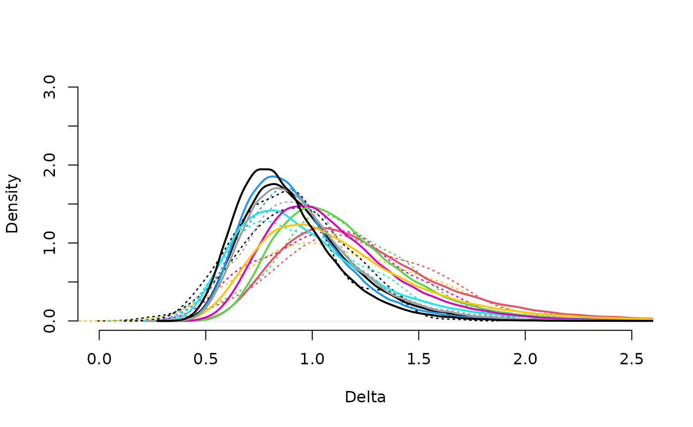
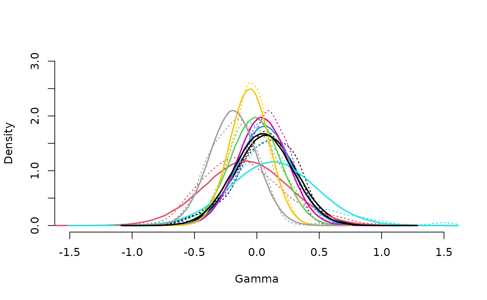
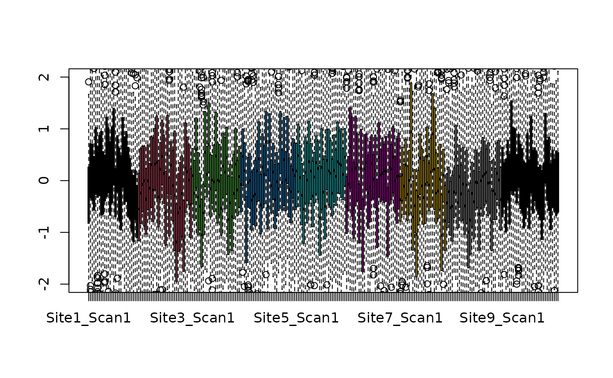
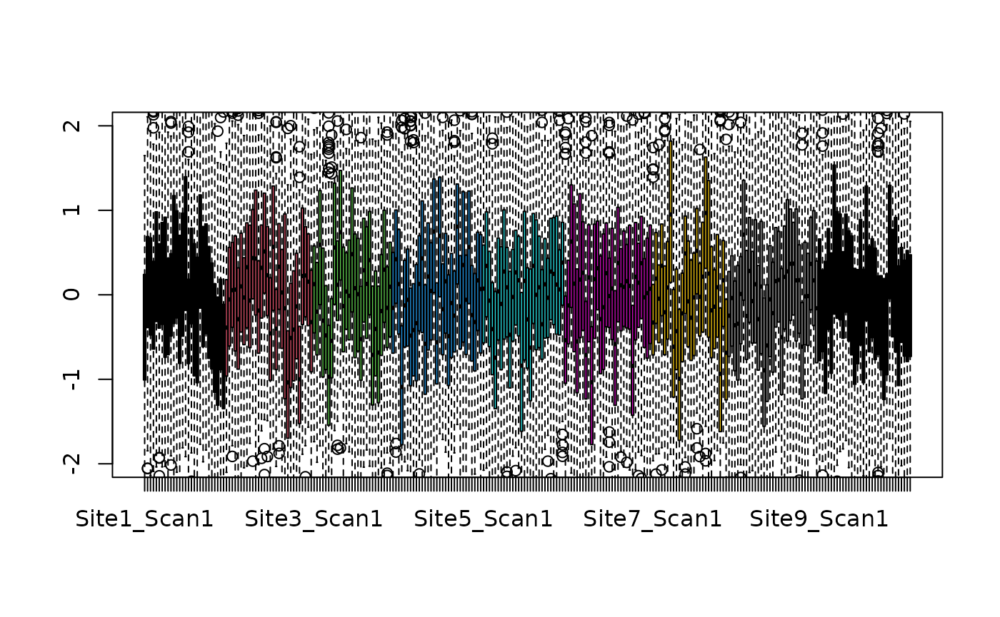

neuroCombat.RmdVignette describing a function in development,
neuroCombatFromTraining. The function applies ComBat
scanner correction factors estimated from a training dataset to a test
dataset. Scanners/sites of the test dataset must be included in the
training dataset.
## Loading required package: SummarizedExperiment## Loading required package: MatrixGenerics## Loading required package: matrixStats##
## Attaching package: 'MatrixGenerics'## The following objects are masked from 'package:matrixStats':
##
## colAlls, colAnyNAs, colAnys, colAvgsPerRowSet, colCollapse,
## colCounts, colCummaxs, colCummins, colCumprods, colCumsums,
## colDiffs, colIQRDiffs, colIQRs, colLogSumExps, colMadDiffs,
## colMads, colMaxs, colMeans2, colMedians, colMins, colOrderStats,
## colProds, colQuantiles, colRanges, colRanks, colSdDiffs, colSds,
## colSums2, colTabulates, colVarDiffs, colVars, colWeightedMads,
## colWeightedMeans, colWeightedMedians, colWeightedSds,
## colWeightedVars, rowAlls, rowAnyNAs, rowAnys, rowAvgsPerColSet,
## rowCollapse, rowCounts, rowCummaxs, rowCummins, rowCumprods,
## rowCumsums, rowDiffs, rowIQRDiffs, rowIQRs, rowLogSumExps,
## rowMadDiffs, rowMads, rowMaxs, rowMeans2, rowMedians, rowMins,
## rowOrderStats, rowProds, rowQuantiles, rowRanges, rowRanks,
## rowSdDiffs, rowSds, rowSums2, rowTabulates, rowVarDiffs, rowVars,
## rowWeightedMads, rowWeightedMeans, rowWeightedMedians,
## rowWeightedSds, rowWeightedVars## Loading required package: GenomicRanges## Loading required package: stats4## Loading required package: BiocGenerics## Loading required package: generics##
## Attaching package: 'generics'## The following objects are masked from 'package:base':
##
## as.difftime, as.factor, as.ordered, intersect, is.element, setdiff,
## setequal, union##
## Attaching package: 'BiocGenerics'## The following objects are masked from 'package:stats':
##
## IQR, mad, sd, var, xtabs## The following objects are masked from 'package:base':
##
## anyDuplicated, aperm, append, as.data.frame, basename, cbind,
## colnames, dirname, do.call, duplicated, eval, evalq, Filter, Find,
## get, grep, grepl, is.unsorted, lapply, Map, mapply, match, mget,
## order, paste, pmax, pmax.int, pmin, pmin.int, Position, rank,
## rbind, Reduce, rownames, sapply, saveRDS, table, tapply, unique,
## unsplit, which.max, which.min## Loading required package: S4Vectors##
## Attaching package: 'S4Vectors'## The following object is masked from 'package:utils':
##
## findMatches## The following objects are masked from 'package:base':
##
## expand.grid, I, unname## Loading required package: IRanges## Loading required package: GenomeInfoDb## Loading required package: Biobase## Welcome to Bioconductor
##
## Vignettes contain introductory material; view with
## 'browseVignettes()'. To cite Bioconductor, see
## 'citation("Biobase")', and for packages 'citation("pkgname")'.##
## Attaching package: 'Biobase'## The following object is masked from 'package:MatrixGenerics':
##
## rowMedians## The following objects are masked from 'package:matrixStats':
##
## anyMissing, rowMedians
se <- seCorticalThickness
se## class: SummarizedExperiment
## dim: 341 263
## metadata(1): ''
## assays(1): freesurfer
## rownames(341): ST101SV ST102CV ... ST154SV ST155SV
## rowData names(2): ID Description
## colnames(263): Site1_Scan1 Site1_Scan2 ... Site9_Scan31 Site9_Scan32
## colData names(4): ID age gender siteWe use the example dataset stored in the neuroCombatData
package: 10 scans from 2 scanners, with 200 imaging features. Scans come
from either a normal or disease brain.
data <- assays(se)[["freesurfer"]]
mod <- model.matrix(~colData(se)$gender+colData(se)$age)
results <- neuroCombat(dat=data,
batch=colData(se)$site,
mod=mod)## [neuroCombat] Found 102 missing data values.
## [neuroCombat] Performing ComBat with empirical Bayes
## [neuroCombat] Found 9 batches
## [neuroCombat] Adjusting for 2 covariate(s) or covariate level(s)
## [neuroCombat] Standardizing Data across features
## [neuroCombat] Fitting L/S model and finding priors
## [neuroCombat] Finding parametric adjustments
## [neuroCombat] Adjusting the Data
names(results)## [1] "dat.combat" "estimates" "info" "dat.original"
## [5] "dat.standardized"
neuroCombat::drawPriorDelta(results$estimates, xlim=c(0,2.5))
neuroCombat::drawPriorGamma(results$estimates, xlim=c(-1.5,1.5))
data_standardized <- results[["dat.standardized"]]
col <- as.numeric(as.factor(colData(se)$site))
boxplot(data_standardized, ylim=c(-2,2),col=col)
data_norm <- results[["dat.combat"]]
data_norm <- standardizeData(data_norm,
batch=colData(se)$site,
mod=mod)## [neuroCombat] Found 9 batches
## [neuroCombat] Adjusting for 2 covariate(s) or covariate level(s)